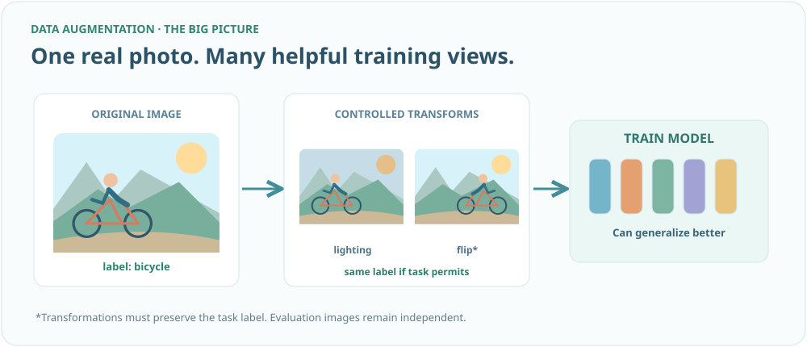
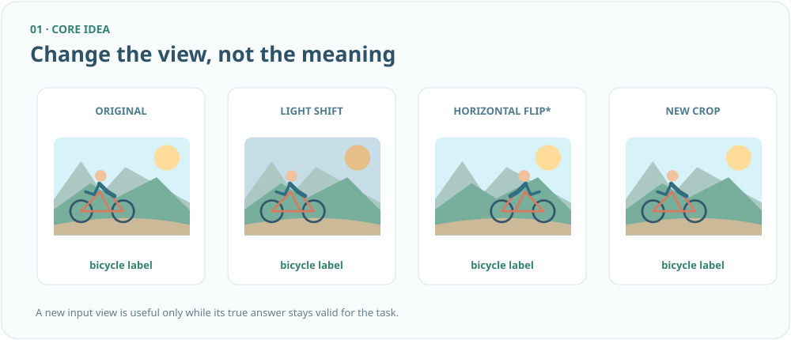
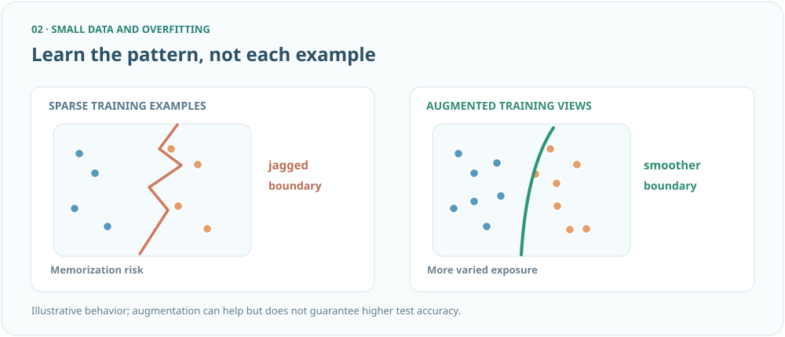
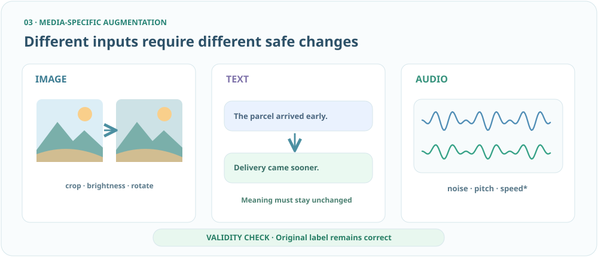
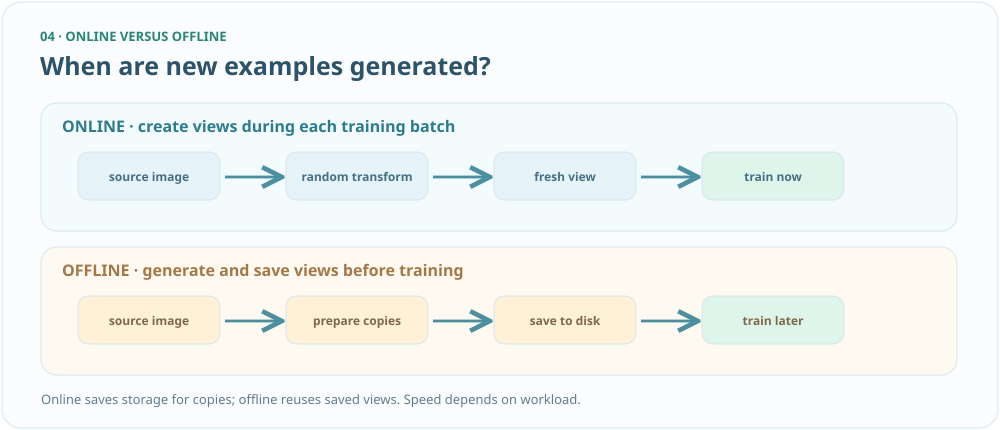
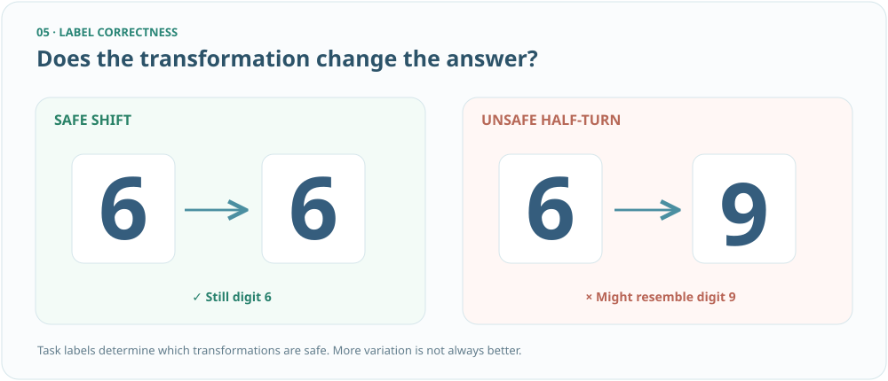
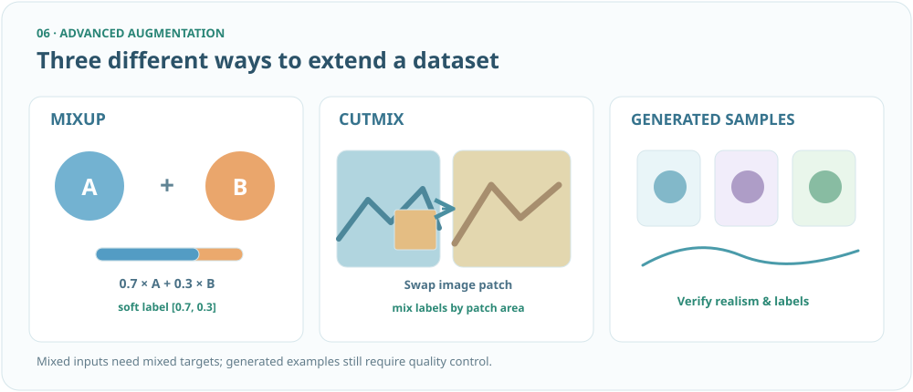
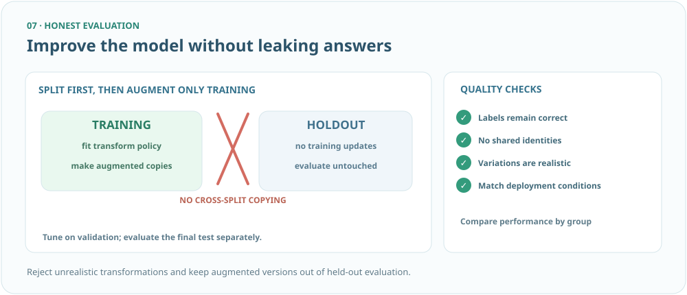

Data Augmentation — SVG staging preview
Review artwork at full width, then on a narrow/mobile viewport. Diagram content is separate from locked questions and answers.
Overview

One source, transformed training views, invariant bicycle label and generalization
↔ Swipe to inspect the detailed diagram
What augmentation makes

Bicycle contact sheet and label-preserving transformations
↔ Swipe to inspect the detailed diagram
Small data and overfitting

Feature-space boundary: sparse versus augmented views
↔ Swipe to inspect the detailed diagram
Image, text, audio

Three media-specific methods with semantic validity
↔ Swipe to inspect the detailed diagram
Online and offline

Two timing and storage timelines
↔ Swipe to inspect the detailed diagram
Preserve the correct label

A six shifted versus a six rotated into a nine-like shape
↔ Swipe to inspect the detailed diagram
Mixup, CutMix, synthetic data

Soft labels, region weights, generation quality
↔ Swipe to inspect the detailed diagram
Optimization without data leakage

Split-first evaluation and deployment-realism checklist
↔ Swipe to inspect the detailed diagram